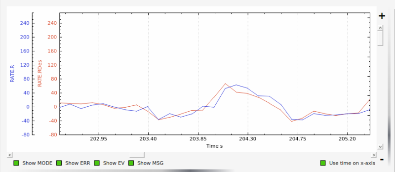
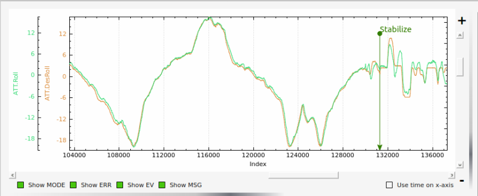

Additional Tuning Topics¶
Tuning ACCEL MAX and Feel¶
The final setting for ATC_ACCEL_x_MAX parameters will depend on the size of the
helicopter. Large 800-900 class machines will typically be in the 36000-52000
range; smaller 450-500 class machines will typically be in the 90000-110000
range. You may want to experiment with the ATC_INPUT_TC parameter as well to get
the initial aircraft response the way you like it. It is recommended to keep the
ATC_INPUT_TC parameter between 0.15 and 0.25. Once this process is complete, the aircraft
should have the desired feel in snappiness and rate.
Below is a graph showing an example of Rate Roll Desired vs actual Rate Roll. The peak corresponds to a rapid stick input and the amplitude (height) of the peaks should be approximately the same with no more than 100 milliseconds offset.
{kind=link}
Setting IMAX and ILMI¶
The IMAX value limits amount of integrator error that can be stored to counter large disturbances in attitude. In the pitch axis this is set by the integrator error required to hold the aircraft attitude at high forward speeds. The starting value is 0.4. To check this set the value to IMAX = 1, fly the aircraft at the maximum desired speed. Pull the log and look at what the maximum I value is in the PIDP message. Set IMAX for 0.1 above the maximum value. You could do the same for the roll axis but typically 0.4 should be sufficient. ILMI is set for the maximum amount of integrator that you want to retain in a hover to help maintain attitude. It is recommended that this value is no larger than 0.1
Below is a graph of desired roll attitude vs actual roll attitude for a helicopter in high-speed autonomous flight with the ILMI parameters set to zero. The effect of the I-gain and IMAX parameters, properly set, will make the helicopter track the desired attitude very closely at speed exceeding 5m/s for more than 2 seconds (what we call “dynamic flight”). It should be within 1-2 degrees of desired in dynamic flight. Towards the right side of the graph the helicopter came to a stop in hover and the pilot switched to Stabilize flight mode. You will notice a discrepancy between the actual and desired roll attitude at that point. This is the effect of having ILMI set to zero. The ILMI can be considered to be a sort of “auto trim” for hover that will reduce the discrepancy between desired and actual pitch and roll attitude when the helicopter is not in dynamic flight.
{kind=link}
Adjusting I-gains For High-Speed Autonomous Flight¶
Prepare a mission with your ground station software that will fly the
helicopter, preferably in a figure-8 pattern to make both right and left turns,
at a speed of 6 m/s. Fly the helicopter on this mission, pull the logs from the
microSD card and look at the AHRS desired vs actual pitch, roll and yaw
attitudes in dynamic flight. They should track within 1-2 degrees. If they do
not, increase the ATC_RAT_xxx_I value for that axis until they do.
Now, fly the same mission, but at higher speed of 9-10 m/s, and analyze the logs the same way. Make further adjustments to the I-gains and IMAX values as required. It is not clear what I-gain values will be required as no two helicopters are the same. But I-gain values from 0.25 - 0.38 are common in pitch and roll, and 0.18 - 0.30 in yaw. IMAX values of 0.40 - 0.45 are common, however refer to the ‘Setting IMAX, and ILMI’ section on how to determine what the IMAX value should be.
Preventing I term Build Up¶
A downside of the I term is that it can build if the vehicle is constrained in its movement, so as not to be able to respond and reduce any long term errors, as when still on the ground. The I term can build to its maximum value and could possibly tip over the vehicle. Two methods are provided to avoid this.
The first is by restricting by providing a “leak” mechanism (constantly reduced at a specified rate) when on the ground or hover(actually when moving with a GPS speed of less than 5m/s). To prevent the I term from completely disappearing at low speeds or hover, the parameters ATC_RAT_RLL_ILMI and ATC_RAT_PIT_ILMI, only lets it leak off so much. So the integrator leak along with the leak minimum parameter keep enough of the integrator to make it effective in keeping the attitudes matching but not so powerful to cause the aircraft to roll over.
The second is to use ArduPilot’s landing and takeoff detection algorithms to zero the I terms when on the ground, and allow it to operate normally after takeoff.
Which method is used is determined by the H_OPTIONS bitmask. Setting bit 0 (ie “1” for the parameter value) will use the first method with a leaky integrator. Since this was the only method used in versions prior to 4.1, it is the default method to avoid changes in behavior upon upgrading to version 4.1. But clearing that bit (value = “0”), will use the second method, which is now usually preferred.